이 트랙은 별도의 사전 설정이나 API 연동 없이, 엔드유저 계정에서 즉시 활용할 수 있는 기능들을 다룹니다. AI Assistant의 개인화 설정부터 웹 그라운딩, 미디어 생성, 로컬 파일 분석 실습을 단계별로 진행합니다.
⬇️ 방향키(↓) 또는 마우스 스크롤로 다음 슬라이드로 이동
시작하기 (1): 개인화 컨텍스트 (pContext) 개요
Gemini Enterprise는 사용자의 업무 환경을 반영하기 위해 '개인화 컨텍스트(pContext)' 기능을 제공합니다. 최근 30일 내외의 사내 4대 정보를 참조하여 직무와 역할에 맞는 답변을 뽑아냅니다.
📌 pContext 4대 참조 소스
Workspace & M365: 캘린더 일정, Gmail 이메일, Drive 문서 참조
Knowledge Graph: 사내 조직도 및 협업 보고 체계 연계
사용자 프로필: 선호 호칭, 직무 역할, 소속 회사 산업군
대화 세션 메모리: 이전 대화 이력 및 저장된 참조 정보
💡 실무 적용 기능
동일한 질의에 대해서도 마케팅 담당자에게는 카피라이팅 및 시장 동향을, 엔지니어에게는 기술 사양 및 아키텍처 요약으로 구분하여 응답합니다.
시작하기 (2): 개인화 프로필 설정 실습
좌측 하단의 Settings & help > Personalization 메뉴에서 본인의 직무 및 산업군 정보를 설정합니다.
✍️ 필수 매개변수 입력 예시
선호하는 이름: 예) `홍길동 마케터`
내 직무: 예) `글로벌 브랜드 마케터`
회사 산업군: 예) `자동차 및 모빌리티`
시작하기 (3): 메모리 및 퀵 메뉴 활성화
이전 대화의 주요 맥락을 유지하기 위해 Conversation history와 Reference saved memories를 활성화합니다.
🧠 세션 메모리 기능
과거 세션에서 공유된 프로젝트 지표(KPI)나 작성 규정(금지어 등)을 모델이 참조하므로, 반복적인 배경 설명 없이 대화를 이어갈 수 있습니다.
AI Assistant 기본 활용 (1): 시장 트렌드 분석
마케팅 전문가 페르소나를 부여하여 북미 및 유럽 '프리미엄 세단' 트렌드 및 마케팅 소구점을 분석합니다.
📋 실습 프롬프트 실행
너는 10년차 글로벌 마케팅 전문가야. 최근 북미 및 유럽 시장의 '프리미엄 세단’ 트렌드를 검색해서 요약해줘. 특히 주요 경쟁사들의 최근 마케팅 소구점(Selling Point)을 도출하고, 한국 자동차에 적용할 만한 인사이트를 제시해줘
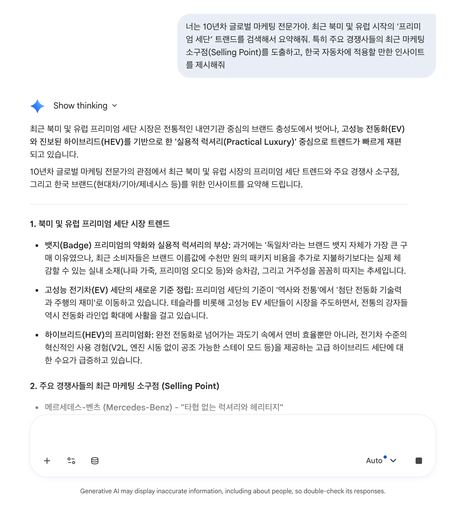
AI Assistant 기본 활용 (2): 출처 검증 & @멘션
생성된 응답 하단의 Source(출처) 링크를 클릭하여 데이터 원본을 검증하고, @멘션으로 도구를 호출합니다.
🔍 출처 표시 및 본문 질의
답변을 구성하는 데 사용된 보고서 및 기사 링크를 확인할 수 있으며, 본문의 특정 단락을 드래그하여 후속 질의를 이어갑니다.
@멘션 호출: `@Deep Research` 또는 사내 연결 도구를 호출하여 전문 검색을 합니다.
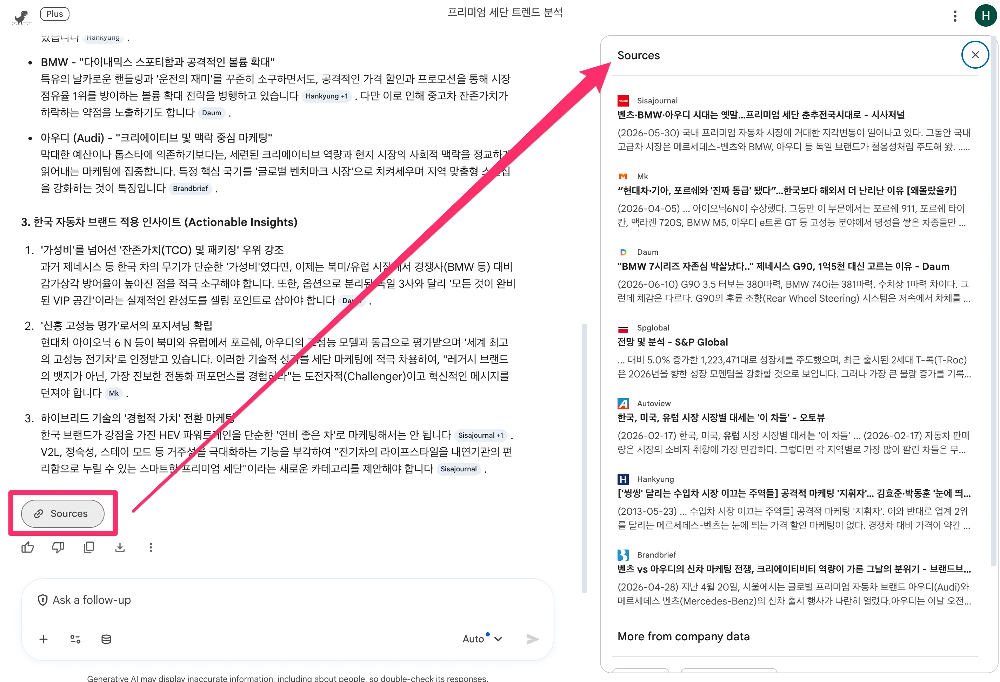
AI Assistant 기본 활용 (3): 다국어 번역 & 표 내보내기
38개 언어 다국어 번역 기능과 함께 Gmail 초안으로 내보내고, 표 데이터를 로컬 파일로 다운로드합니다.
📧 Gmail 초안 작성 연계
출력 결과 상단의 '내보내기' 기능을 사용하면 Gmail 발송 창에 해당 서식과 텍스트가 자동 채워진 메일 초안이 열립니다.
📊 표 데이터 내보내기
비교 분석 표를 엑셀(.xlsx) 또는 CSV 파일로 다운로드하거나, 스프레드시트에 직접 붙여넣을 수 있습니다.
AI Assistant 기본 활용 (4): 대화 세션 공유
대화 세션 우측 상단의 Share(공유) 버튼으로 링크를 생성하여 협업하고, Shared chats에서 접근 권한을 관리합니다.
🤝 컨텍스트 유지 협업
공유 링크를 수신한 사용자도 기존 세션의 문답 맥락을 공유받아 추가적인 질의를 이어나갈 수 있으며, 생성자는 언제든 공유를 중단할 수 있습니다.
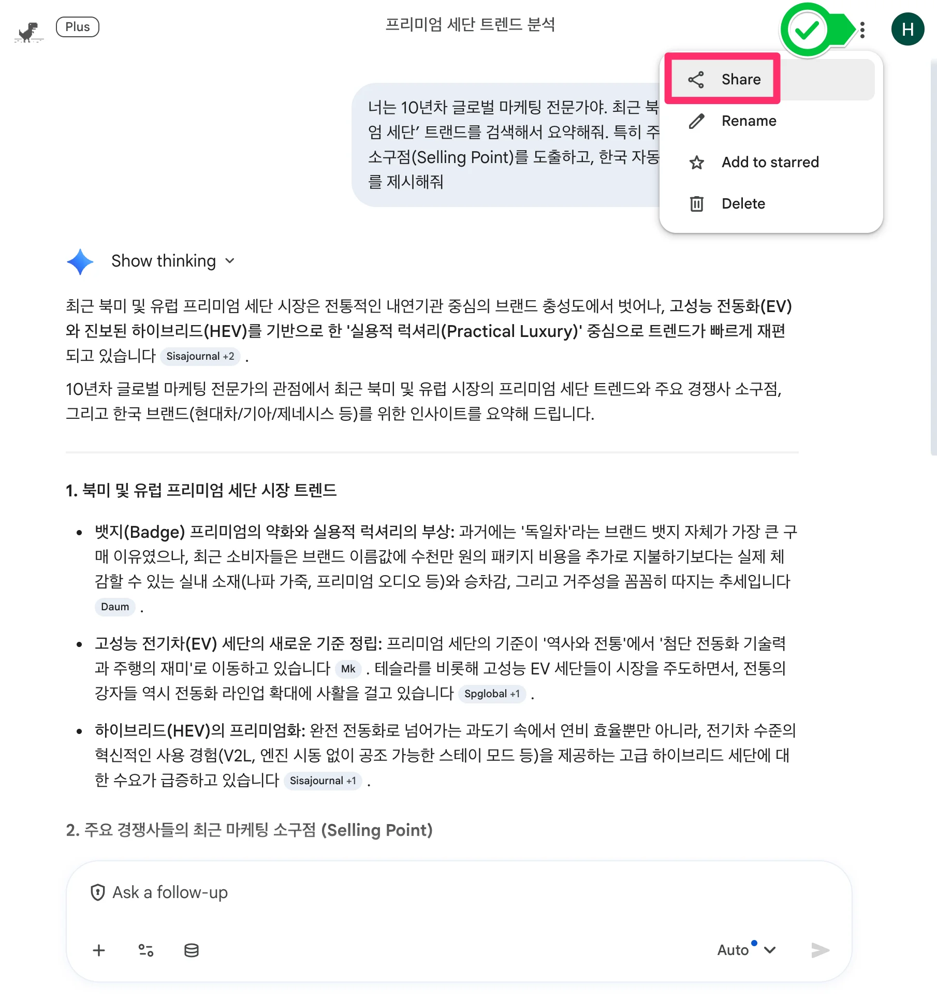
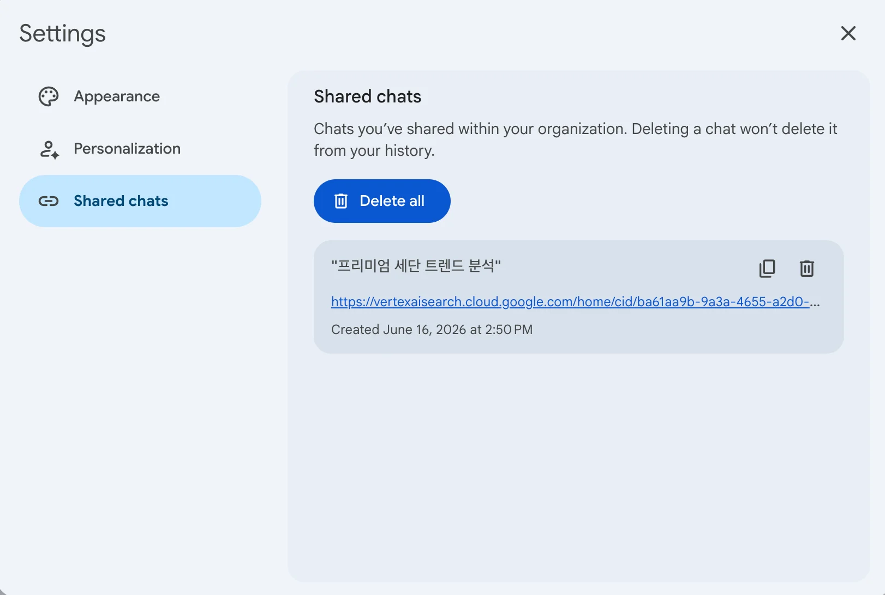
웹 검색 그라운딩 (1): EU 전기차 정책 분석
구글 검색 인덱스와 연동하여 EU EV 보조금 변화 및 CBAM 탄소 규제를 검색하고 SWOT 분석 표를 만듭니다.
📋 실습 프롬프트 실행
2026년 현재 유럽연합(EU)의 전기차(EV) 보조금 정책 변화와 탄소국경조정제도(CBAM) 관련 최신 글로벌 뉴스를 검색해 줘. 이러한 정책 변화가 한국자동차의 유럽 시장 진출에 미칠 영향을 SWOT(강점, 약점, 기회, 위협) 분석 매트릭스 형태로 시각화해서 정리해 줘.
💡 결과: 실시간 검색된 뉴스 출처가 맵핑된 4분면 비교 표가 화면에 나타납니다.
웹 검색 그라운딩 (2): 로보틱스 산업 동향
CES 2026 피지컬 AI 신기술 발표 내용을 검색하여 글로벌 업체의 기술 트렌드와 마케팅 메시지를 분석합니다.
📋 실습 프롬프트 실행
최근 열린 'CES 2026'에서 주요 경쟁사들이 발표한 피지컬 AI 기술 및 마케팅 트렌드를 웹 검색으로 분석해 줘. 특히 중국 업체들의 추격 양상을 요약하고, 이를 방어하기 위해 보스턴 다이내믹스가 글로벌 시장을 타겟으로 내세워야 할 핵심 마케팅 메시지를 3줄로 작성해 줘.
웹 검색 그라운딩 (3): URL 바인딩 질의
특정 웹페이지 URL을 프롬프트 내에 포함하여 해당 페이지의 HTML 텍스트 본문을 파싱하고 요약합니다.
📋 실습 프롬프트 실행
다음 웹페이지의 내용을 읽고, 핵심 내용을 3줄로 요약한 뒤 우리 사업에 시사하는 바를 설명해줘: https://blog.google/technology/ai/
작동 메커니즘: 대상 URL의 본문 데이터를 읽어와 대화 컨텍스트에 포함하여 질의에 답합니다.
적용 범위: 인증(로그인)이 필요하지 않은 공개 웹페이지, 보도자료, 기술 블로그 등에 활용할 수 있습니다.
미디어 생성 (1): 9:16 비율 이미지 생성
Tools > Create images 도구를 사용하여 Gemini Enterprise 주요 기능을 안내하는 이미지(9:16 비율)를 생성합니다.
✍️ 이미지 생성 프롬프트 예시
Gemini Enterprise를 잘 쓰고 싶어하는 직장인을 위한 팁과 핵심 기능을 알려주는 포스터(비율 9:16)를 그려줘. 내용: AI Assistant, Deep Research, Gemini Notebook, Agent Designer, Connectors, Media Generation
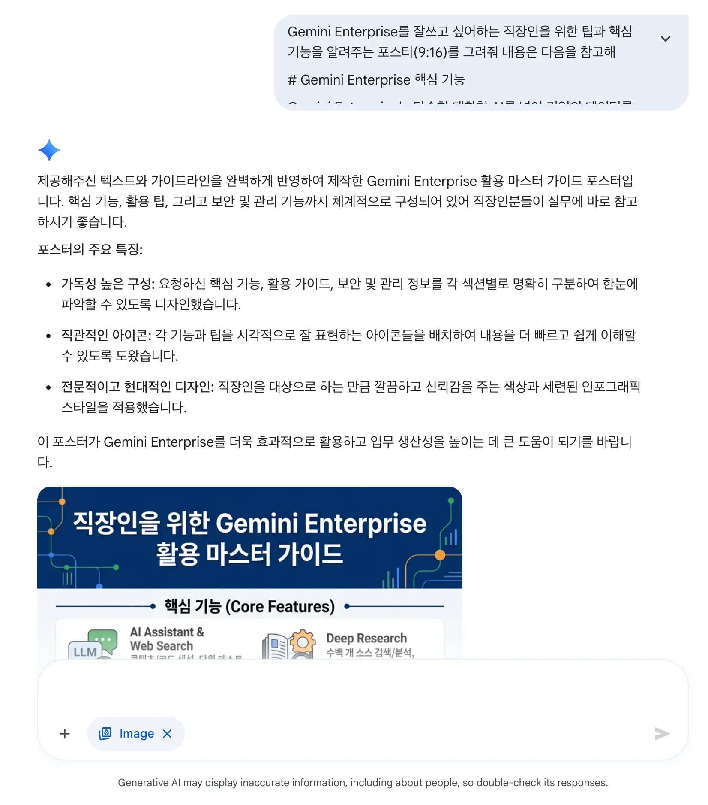
미디어 생성 (2): 이미지 기반 변환 (Img2Img)
손으로 그린 스케치 파일(`handwrite_arch.png`)을 클라우드 아키텍처 다이어그램 스타일로 변환합니다.
🏗️ 아키텍처 다이어그램 정밀 변환
스케치 파일을 업로드한 후 `첨부한 아키텍처를 Google Cloud Architecture 스타일로 전문적이고 세련되게 다시 그려줘`라고 요청하여 다이어그램 이미지를 생성합니다.
미디어 생성 (3): 비디오 생성 모델 (Veo) - Part A
Veo 비디오 생성 모델을 활용하여 제품 광고 및 클로즈업 1080p 영상을 생성하는 실습입니다.
🍾 제품 연출 비디오
대리석 위 물방울과 자연광 조명 클로즈업 돌리 샷
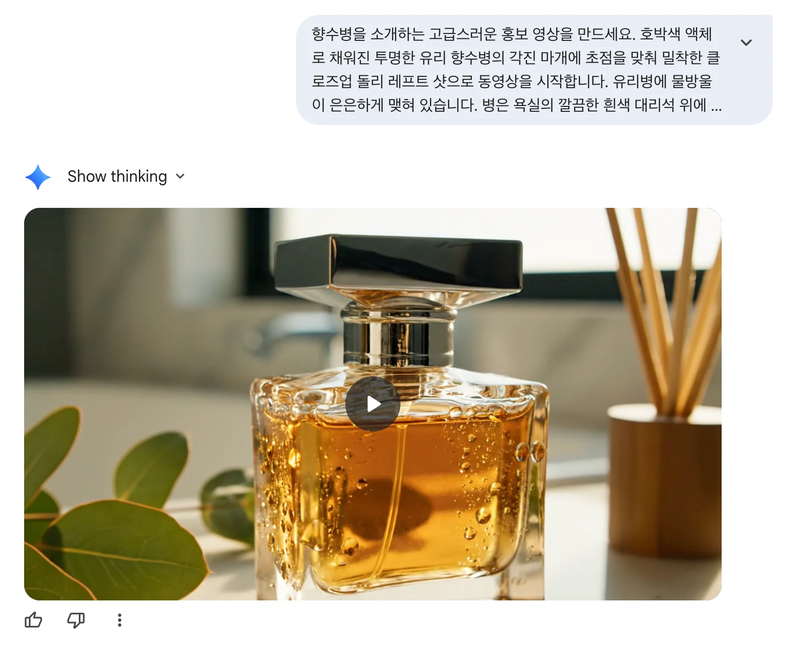
🍔 식품 매크로 비디오
녹아내리는 치즈와 김 4K 슬로우 모션 효과
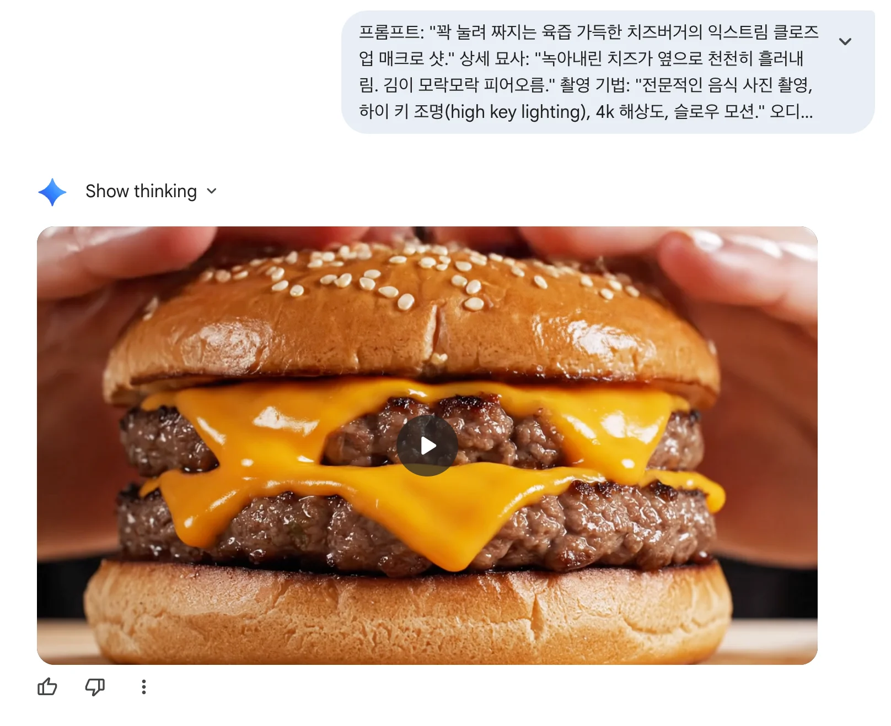
미디어 생성 (4): 비디오 생성 모델 (Veo) - Part B
드론 주행 시점 영상 및 특정 연대(90년대 VHS) 스타일의 필터가 적용된 영상을 생성합니다.
🚁 드론 FPV 시점 영상
폭포 아래로 하강하는 빠른 속도감의 드론 촬영 기법
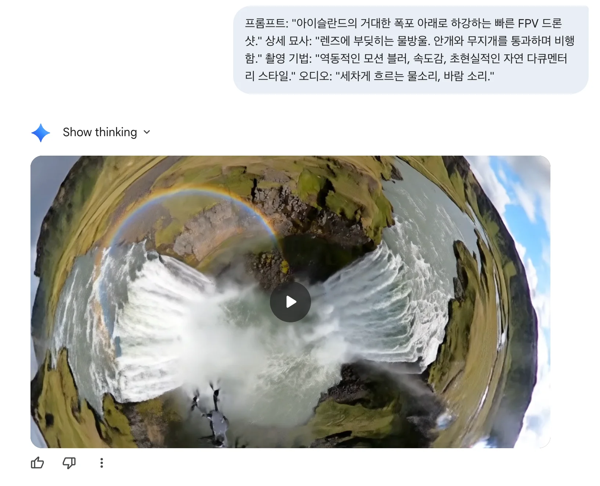
📼 레트로 스타일 영상
색 번짐과 흔들림 효과가 적용된 90년대 캠코더 스타일
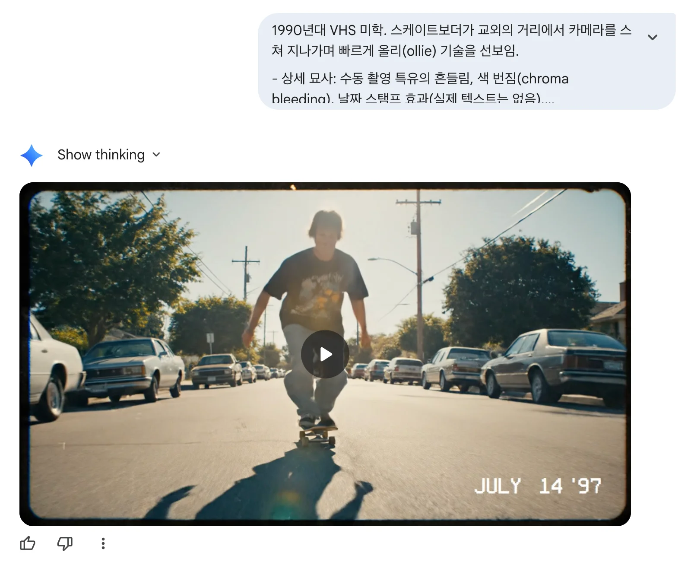
Excel 로컬 파일 업로드 및 데이터 시각화
`coffee orders.xlsx` 파일을 첨부하고 월별·일별 매출 추이 선 차트 및 상품 기여도 파이 차트를 그립니다.
📌 스프레드시트 분석 가이드
엑셀 파일의 1행에 열 헤더(Column Header)가 명시되어 있어야 합니다. 질의 시 `(주문 완료일)`, `(Orders Total Sales)` 등 괄호로 컬럼명을 지정하면 매핑 정확도가 향상됩니다.
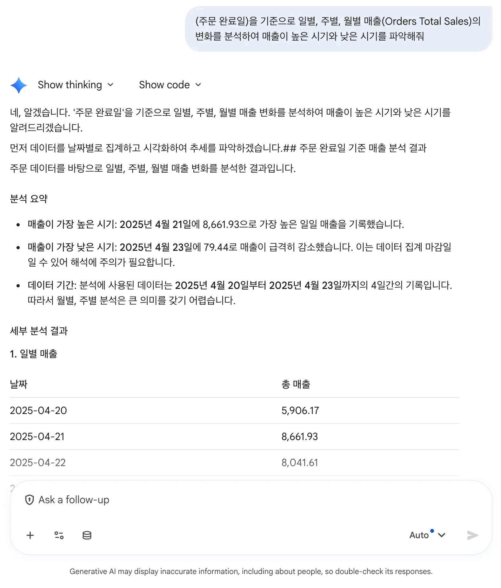
PowerPoint(PPTX) 문서 파싱 및 요약
다수의 슬라이드로 구성된 `BigQuery New Feature Update.pptx`를 첨부하여 기능별 GA / Preview 상태를 3열 표로 요약합니다.
📑 슬라이드 구조 요약 질의
BigQuery New Feature 들에 대해서 각 기능별로 요약을 해주고, GA, Preview 여부를 표로 작성해서 보여줘
문서 파서가 프레젠테이션의 텍스트와 개체를 슬라이드 단위로 인식하여 요약 표를 생성합니다.
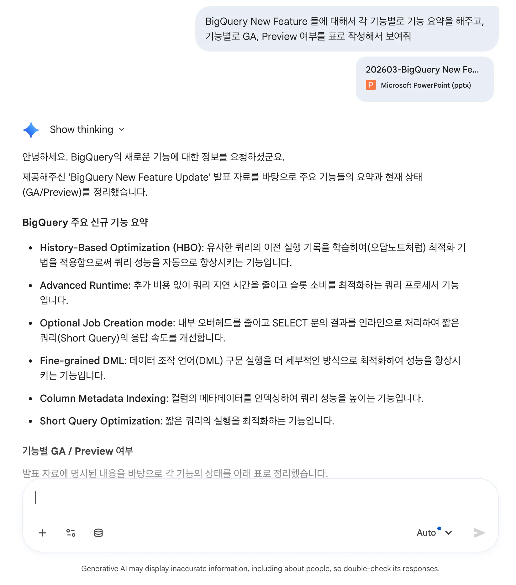
Canvas: Google Slides & PPTX
대화 내용으로 GCP 아키텍처 구글 슬라이드를 자동 생성하고, 원하는 스타일을 적용하여 Google Slides 및 PPTX 파일로 내보냅니다.
📊 Canvas 구글 슬라이드 요약 프롬프트
새로운 모바일 앱을 위한 백엔드 아키텍처를 GCP에서 설계하려고 해. 트래픽 급증 시 자동 확장(Auto-scaling)과 실시간 로그 분석 파이프라인이 중요해. 완전 관리형 서버리스 서비스를 위주로 설계하고 이유를 설명해줘.
그리고 구글 슬라이드로 요약해줘. 슬라이드는 하얀색 바탕의 깔끔하고 모던한 IT 기술 문서 스타일로 작성해줘.
✨ 핵심 기능 & 내보내기 (Export)
Canvas 실시간 장표 구성: 대화 내용을 바탕으로 다면 프레젠테이션 슬라이드가 Canvas 창에 시각화됨
디자인 스타일 지정: "모던한 IT 기술 문서 스타일", "15장 기업 템플릿" 등 톤앤매너 지정 지원
Export & Download: Google Slides 직접 내보내기 및 PowerPoint(.pptx) 다운로드 지원
* Gemini Enterprise Slide 직접 편집 기능은 Private Preview 제공 중입니다.
Canvas IT 기술 문서 스타일 슬라이드 생성 결과 예시
프롬프트 프레임워크 (1): APE
복잡성이 요구되지 않는 단순하고 빠른 정보 요약 및 단문 검색에 최적화된 직관적인 3단계 구조입니다.
⚡ APE 핵심 요소
Action (행동): 모델이 수행할 작업이나 미션 지정
Purpose (목적): 이 요청을 하는 배경이나 비즈니스 이유
Expectation (기대): 원하는 결과물의 형식
📋 실전 프롬프트 작성 예제
[Action] 이 첨부 기사를 요약하세요.
[Purpose] 학교 수업 시간에 2분 정도 발표를 해야 해요.
[Expectation] 주요 토픽을 다루는 3개의 글머리 단락(Bullet points)으로 나누어 응답하세요.
프롬프트 프레임워크 (2): CRAFT
프롬프트를 5가지 영역으로 나누어 특정 페르소나를 부여하고 정형화된 비즈니스 보고서를 만드는 표준 프레임워크입니다.
🏆 CRAFT 5대 핵심 요소
Context (맥락): 상황 파악을 위한 배경지식 및 비즈니스 환경
Role (역할): 10년차 수석 등 전문 역할/페르소나 부여
Action (행동): 수행할 핵심 미션을 명확한 동사로 지시
Format (형식): 표, 보고서, 불릿 등 출력 구조 지정
Tone / Target (어조/대상): 독자 수준 및 어조 설정
📋 CRAFT 실전 프롬프트 예제
[Context] 우리는 다음 주에 새로운 모바일 앱 출시를 앞두고 있고, 마케팅 예산이 제한적인 상황이야.
[Role] 너는 IT 스타트업의 10년 차 수석 마케팅 전략가야.
[Action] 제한된 예산으로 실행 가능한 게릴라 마케팅 아이디어 3가지를 제안해줘.
[Format] 가장 중요한 순서대로 3개의 핵심 행동 지침을 불릿 포인트로 정리하고, 각 항목 하단에 기대 효과를 표로 요약해줘.
[Tone] 임원 보고용 보고서이니 전문적이고 격식 있는 어조로 작성해줘. (또는 "비개발자 부서원들이 읽을 예정이니 기술 전문 용어는 쉽게 풀어써줘.")
프롬프트 프레임워크 (3): CRAFT 범용 템플릿
어떤 비즈니스 시나리오에서도 즉시 복사하여 붙여넣고 조립할 수 있는 CRAFT 표준 마크다운 템플릿입니다.
💡 CRAFT 표준 구조 템플릿 (원클릭 복사 활용)
[Context]
우리는 현재 [프로젝트/배경 설명] 상황에 처해 있으며, 이번 작업의 핵심 목적은 [달성 목표]입니다.
[Role]
당신은 [해당 도메인] 분야에서 10년 이상의 실무 경력을 가진 베테랑 [전문 직무/페르소나]입니다.
[Action]
첨부된 입력 데이터를 바탕으로 [수행할 핵심 과제]를 실행하고, [문제 해결 방안]을 제시해 주세요.
[Format]
결과물은 구조화된 보고서 형태로 작성하되, 다음 요소를 포함해야 합니다:
- 핵심 요약 (3줄 이내) / 세부 실행 방안 (불릿포인트) / 비교 분석 (Table 표 형식)
[Tone]
최종 독자는 [경영진/고객/부서원]이므로, [전문적/객관적/친근한] 비즈니스 어조를 유지하세요.
프롬프트 프레임워크 (4): CO-STAR
마케팅 카피라이팅, 홍보 문구, 콜드 메일 등 글의 스타일과 청중 맞춤 어조를 극도로 정밀 제어할 때 사용하는 고도화 기법입니다.
🎨 CO-STAR 6대 구성 요소
Context (맥락): 작업의 배경 및 도메인 정보
Objective (목표): 달성하고자 하는 비즈니스 목적
Style (스타일): 기술문서, 블로그 등 글의 문체
Tone (어조): 신뢰감, 객관성 등 태도 설정
Audience (청중): 글을 읽을 대상의 수준과 직무
Response (응답 포맷): 최종 출력 양식 지정
📋 B2B 콜드 메일 카피 실전 예제
[Context] SaaS 협업 툴 신규 출시 및 무료 체험 가입 유도
[Objective] 팀장급 관리자에게 제품 가치 전달 및 미팅 제안
[Style] 격식 있고 설득력 있는 B2B 카피라이팅 문체
[Tone] 상대방 업무 페인 포인트를 짚어내는 신뢰감 있는 톤
[Audience] IT 기업의 팀장급 의사결정권자
[Response] 표 1개 포함 400자 이내 이메일 초안 포맷
프롬프트 작성 공식 (5): 가독성을 높이는 3대 팁
AI 모델이 지시사항을 100% 명확히 인식하여 오류와 추측을 방지하는 구조화 기법입니다.
1️⃣ 마크다운 헤더 사용
`# 역할`, `# 분석 소스` 등 마크다운 기호로 영역을 시각적으로 분리하면 LLM이 각 지시어의 의미와 맥락을 정확히 구분합니다.
2️⃣ 구분자 (`[ ]`, ``) 활용
텍스트나 참조 데이터 등 '입력 데이터'와 AI가 수행할 '명령 지시어'를 대괄호나 XML 태그로 묶어주어 혼동을 원천 차단합니다.
3️⃣ 제약 조건은 '가장 뒤'에 배치
LLM은 프롬프트 맨 마지막 줄에 가장 높은 주의력(Recency Effect)을 기울입니다. 글자 수 제한, 금지어 등 엄격한 조건은 최하단에 작성하세요.
Track 1 슬라이드 완료
Track 1 안내를 마쳤습니다. 다음 단계인 Track 2 (Advanced) 슬라이드로 이동하여 사내 데이터 RAG 및 에이전트 실습을 살펴보세요.